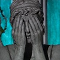
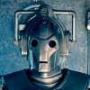
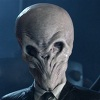
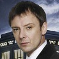
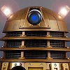

Every good guy needs a bad guy, and flying about through space and time, thwarting plans, is bound to make you a few enemies. Below is a list of a few that repeatedly pop up in the new series and, since they are the big bads, most of them have carried through from the older series. They are listed in no particular order.
The Weeping Angels

The Angels are my one of my favorite villains from the series. Trapped by their own defense mechanism, they can only move when no one is looking at them. They frequently are in the pose shown at the left, covering their face with their hands. If they touch someone, that person is sent back in time and the Angel feeds off of their displaced life energy.
The Cybermen

The Cybermen are metal men intent on the conversion of humankind. While they are metal on the outside, on the inside they are, or were, human. The human body has been mutilated so that it is compatible with the machines. They have multiple origins across multiple dimensions, but their goals are ultimately the same.
The Silence

The Silence are a very intriguing villain. They are an organization, but the alien pictured to the left is also associated by that name. These aliens can always be seen, but never remembered. Once someone stops looking at them, that person no longer remembers anything that happened while looking at the alien. Anything they say, however, acts as a subliminal message, and the person is under the impression to do whatever the Silence told them to do.
The Master

The Master is another Timelord who meets the Doctor when it is believed that the Doctor is the last Timelord remaining. He has various plans throughout his appearances, but they usually involve global or galactic domination. Despite always being at odds with the Doctor, a brotherly bond is also there, making this rivalry a bit more personal.
The Daleks

Last, but definitely not least, are the Daleks. Oldest and possibly the most powerful foes of the Doctor, and all of existence, the Daleks have but one priority, “Exterminate!” These characters have been fighting their way across space and time, determined to destroy everything that is not a Dalek, with no room for negotiation. They have no emotion, other than hatred, and no other feelings of any kind. Their cries of “Exterminate!” are a well-known source of terror to all of the Doctor’s companions, and are always certain to send a chill down the spine when heard.